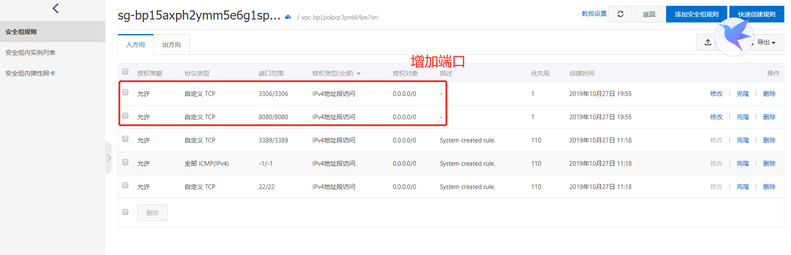

原文连接:https://www.cnblogs.com/Java3y/p/11751688.html
前言
只有光头才能变强。
文本已收录至我的GitHub仓库，欢迎Star：https://github.com/ZhongFuCheng3y/3y
最近阿里云双十一活动服务器特便宜，如果之前关注我的同学就知道，我是建议直接上云服务器而不折腾虚拟机的(主要是可以节省时间)。
有的同学不知道服务器买了以后怎么耍，我这里给大家简单写写，希望对新人有帮助。
一、简单使用服务器
通过我的二维码/链接购买，一年最低仅需86块（新用户专享，如果不是新用户的可以用家里人的账号购买）
- https://www.aliyun.com/1111/2019/group-buying-share?ptCode=BAE381504A2EEA49FE4F2FAD56CD1D20647C88CF896EF535&userCode=pfn5xpli&share_source=copy_link
买完了以后，我们可以登录阿里云控制台的提货券管理找到刚才买的服务器：
系统选择上，我们搞Java的一般选Centos就好了(按需选择)：
一般来说，我们买了服务器都是通过SSH连接去操作服务器的，我在Windows上一般使用Xshell去连接服务器的。(Xshell可以在公众号下回复“99”得到下载链接)
步骤为以下：
- 首先，我们先在Xshell生成公钥
- 在阿里云控制台创建密钥对(选择配置项；导入已有的密钥对)
- 输入刚才在Xshell生成的公钥信息
- 在后台重启阿里云服务器
- 完了以后，我们就可以在Xshell上登录阿里云服务器了(用户名为root)
生成公钥：
最终得到公钥的信息：
在阿里云后台创建密钥对：
重启服务器：
Xshell登录：
Xshell的一些配置：

登录成功：
详细的教程（必看）：
二、使用Linux系统
上面我们已经可以通过Xshell去连接云服务器了，而Centos是Linux系统，首先我们要学习一些Linux命令才能操作。
我之前写过几篇文章，如果不懂Linux命令的同学可以跟着练练，我认为可以解决日常的使用了（如果一些想要做的操作，又不知道怎么弄，搜一下就好了）
(在公众号下回复"99"获取原图)
2.1 下载JDK和MySQL/Tomcat
JDK8下载：
MySQL下载：
现在下载JDK和MySQL需要账号和密码；可以使用这个：
账号：liwei@xiaostudy.com
密码：OracleTest1234下载Tomcat：
在Windows安装完了以后，我们要将Windows的文件传输到我们的远程服务器上。在Xshell中点击下图的位置：
找到我们的文件，传输就好了；
2.3安装JDK
tar -zxvf jdk-8u231-linux-x64.tar.gz
编辑配置文件
vim /etc/profile
在配置文件后添加下面的内容(我的是直接安装在root目录，所以路径直接写root)
export JAVA_HOME="/root/jdk1.8.0_231"
export PATH="$JAVA_HOME/bin:$PATH"
刷新配置文件
source /etc/profile完了以后，输出Java版本看一下：
java -version2.4 安装MySQL
安装所需的环境
[root@localhost ~]# yum -y install make bison-devel ncures-devel libaio
[root@localhost ~]# yum -y install libaio libaio-devel
[root@localhost ~]# yum -y install perl-Data-Dumper
[root@localhost ~]# yum -y install net-tools 安装bison（我安装的是2.5.1的版本）
bison下载地址：http://www.gnu.org/software/bison/
[root@localhost ~]# tar zxvf bison-2.5.1.tar.gz
[root@localhost ~]# cd bison-2.5.1
[root@localhost ~]# ./configure
[root@localhost ~]# make
[root@localhost ~]# make install 安装gc++环境：
yum -y install gcc gcc-c++ autoconf automake zlib* libxml* ncurses-devel libmcrypt* libtool* cmake安装cmake(我安装的是3.15.4的版本)
cmake下载地址：http://www.cmake.org/
tar -xzvf cmake-3.15.4.tar.gz
cd cmake-3.15.4
./bootstrap
make
make install
# 更新一下配置
source /etc/profile解压刚刚下载的Mysql安装包（我是按照它的指示就在root的目录下安装）
tar -zxvf mysql-5.6.46.tar.gz
cd mysql-5.6.46
# 安装必要的配置
yum install openssl-devel使用cmake安装
cmake \-DCMAKE_INSTALL_PREFIX=/usr/local/mysql -DMYSQL_DATADIR=/usr/local/mysql/data -DSYSCONFDIR=/etc/my.cnf -DWITH_MYISAM_STORAGE_ENGINE=1 -DWITH_INNOBASE_STORAGE_ENGINE=1 -DWITH_MEMORY_STORAGE_ENGINE=1 -DWITH_READLINE=1 -DMYSQL_UNIX_ADDR=/tmp/mysqld.sock -DMYSQL_TCP_PORT=3306 -DENABLED_LOCAL_INFILE=1 -DWITH_PARTITION_STORAGE_ENGINE=1 -DEXTRA_CHARSETS=all -DDEFAULT_CHARSET=utf8 -DDEFAULT_COLLATION=utf8_general_ci
make 和安装
make && make install
配置mysql
检查系统是否已经有mysql用户，如果没有则创建
[root@localhost mysql-5.6.46]# cat /etc/passwd | grep mysql
[root@localhost mysql-5.6.46]# cat /etc/group | grep mysql
创建mysql用户（但是不能使用mysql账号登陆系统）
[root@localhost mysql-5.6.46]# groupadd mysql
[root@localhost mysql-5.6.46]# useradd -g mysql mysql
修改权限
[root@localhost mysql-5.6.46]# chown -R mysql:mysql /usr/local/mysql
切换到mysql目录
cd /usr/local/mysql
设置权限等东西
chown -R mysql:mysql . (#这里最后是有个.的大家要注意# 为了安全安装完成后请修改权限给root用户) scripts/mysql_install_db --user=mysql (先进行这一步再做如下权限的修改)
chown -R root:mysql . (将权限设置给root用户，并设置给mysql组， 取消其他用户的读写执行权限，仅留给mysql "rx"读执行权限，其他用户无任何权限)
chown -R mysql:mysql ./data (数据库存放目录设置成mysql用户mysql组) chmod -R ug+rwx . (赋予读写执行权限，其他用户权限一律删除仅给mysql用户权限)
将mysql的配置文件拷贝到/etc
cp support-files/my-default.cnf /etc/my.cnf
修改my.cnf
vi /etc/my.cnf
在下面添加：
user=mysql
datadir=/usr/local/mysql/data
default-storage-engine=MyISAM
启动mysql（还是在mysql的目录下进行的）
cp support-files/mysql.server /etc/init.d/mysql
service mysql start
修改root的密码
chkconfig --add mysql
修改密码 cd 切换到mysql所在目录
cd /usr/local/mysql
./bin/mysqladmin -u root password 最后设置新的密码即可！
重启MySQL，启动客户端
service mysql restart
cd /usr/local/mysql/bin/
./mysql -u root -p

参考资料：
2.5 启动Tomcat
tar -zxvf apache-tomcat-8.5.47.tar.gz
cd apache-tomcat-8.5.47/bin/
./startup.sh
三、开安全组端口
前面我们已经启动了MySQL和Tomcat了，如果想要从外部访问服务器的MySQL和Tomcat，需要在阿里云控制台上开对应的端口号，不然是访问不到的。

重启服务器；尝试在Windows上访问Linux的启动后的Tomcat和MySQL
MySQL远程连接需要配置一下：
例如，你想myuser使用mypassword从任何主机连接到mysql服务器的话。
GRANT ALL PRIVILEGES ON *.* TO 'root'@'%' IDENTIFIED BY 'mypassword' WITH GRANT OPTION;
FLUSH PRIVILEGES;
最后
希望这篇文章对大家刚接触云服务器有帮助。
通过我的二维码/链接购买，一年最低仅需86块（新用户专享，如果不是新用户的可以用家里人的账号购买）
- https://www.aliyun.com/1111/2019/group-buying-share?ptCode=BAE381504A2EEA49FE4F2FAD56CD1D20647C88CF896EF535&userCode=pfn5xpli&share_source=copy_link
乐于输出干货的Java技术公众号：Java3y。公众号内有200多篇原创技术文章、海量视频资源、精美脑图，关注即可获取！

觉得我的文章写得不错，点赞！